Chen Li
I am a Senior Research Scientist in IHPC, A*STAR, working with Dr. Basura. Previously I was a research fellow in the Computer Science Department at NUS, where I worked with Prof. Gim Hee Lee. Before that, I did my PhD at the same department supervised by Prof.Gim Hee Lee, and Master in the Electronic Engneering Department at Beihang University, supervised by Prof. Xia Mao.
I am looking for self-motivated PhD students, visiting students and interns. Please drop me an email if you are interested. Scholarships are available at link. I am also open to collaboration.
Email lichen [at] u [dot] nus [dot] edu Google ScholarResearch Field
My research focuses on 3D Computer Vision and Deep Learning. Specifically, I have been working on 3D human/animal pose modeling and motion reasoning, 3D general scene modeling and understanding, human-scene interaction modeling.
Publications
|
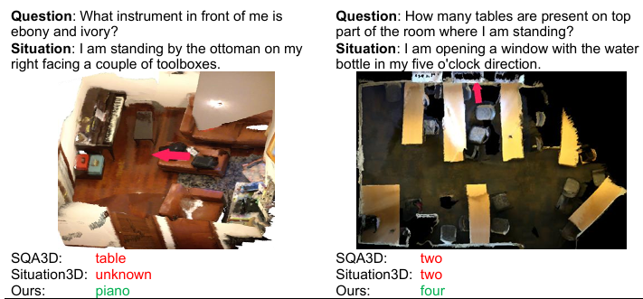 |
HMR3D: Hierarchical Multimodal Representation for 3D Scene Understanding with Large Vision-Language Model
Chen Li*, Eric Peh*, Basura Fernando. Arxiv [Paper] |
|
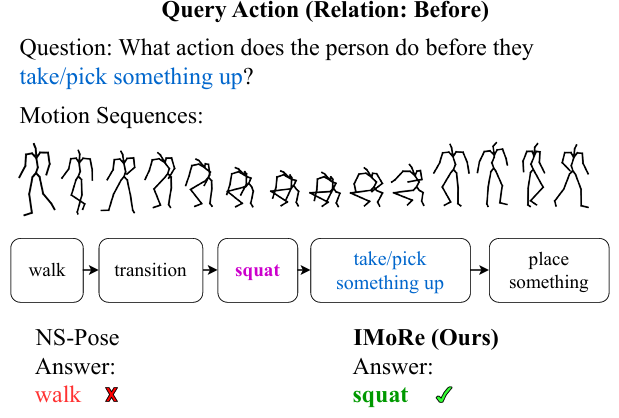 |
IMoRe: Implicit Program-Guided Reasoning for Human Motion QA
Chen Li*, Chinthani Sugandhika*, Ee Yeo Keat, Eric Peh, Hao Zhang, Hong Yang, Deepu Rajan, Basura Fernando. ICCV 2025 [Paper] [Code] |
|
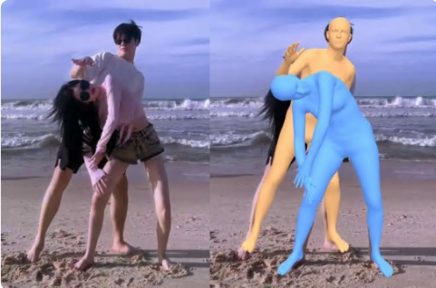 |
Reconstructing Close Human Interaction with Appearance and Proxemics Reasoning
Buzhen Huang, Chen Li, Chongyang Xu, Dongyue Lu, Jinnan Chen, Yangang Wang, Gim Hee Lee. CVPR 2025 [Paper] [Code] [Project Page] |
|
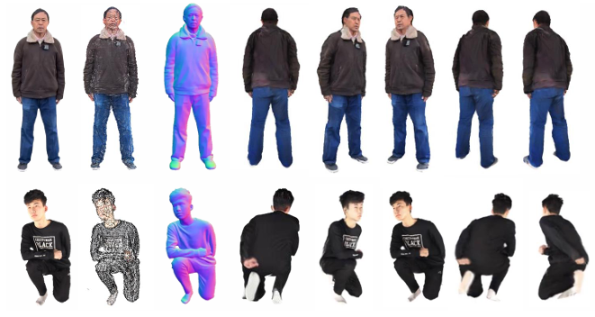 |
Generalizable Human Gaussians from Single-View Image
Jinnan Chen, Chen Li, Jianfeng Zhang, Lingting Zhu, Buzhen Huang, Hanlin Chen, Gim Hee Lee. ICLR 2025 [Paper] [Code] [Project Page] |
|
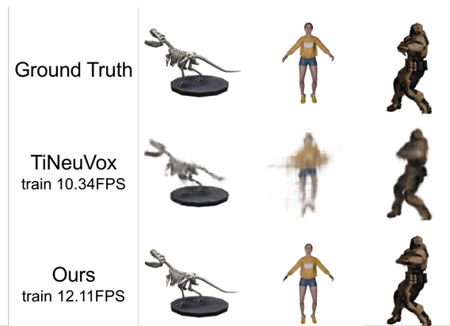 |
DiHuR: OD-NeRF: Efficient Training of On-the-Fly Dynamic Neural Radiance Fields
Zhiwen Yan, Chen Li, Gim Hee Lee. 3DV 2025 [Paper] |
|
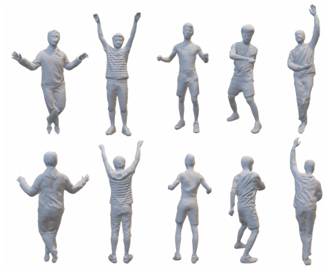 |
DiHuR: Diffusion-Guided Generalizable Human Reconstruction
Jinnan Chen, Chen Li, Gim Hee Lee. WACV 2025 [Paper] |
|
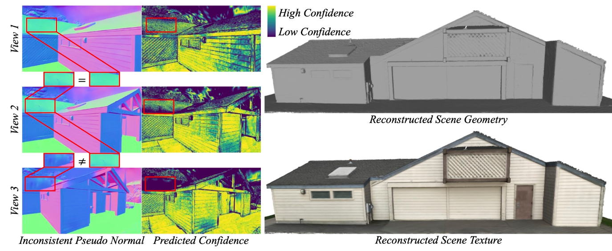 |
VCR-GauS: View Consistent Depth-Normal Regularizer for Gaussian Surface Reconstruction
Hanlin Chen, Fangyin Wei, Chen Li, Tianxin Huang, Yunsong Wang, Gim Hee Lee. NeurIPS 2024 [Paper] [Code] |
|
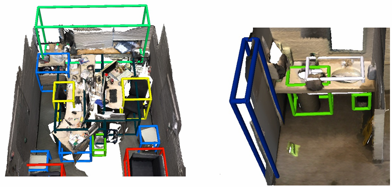 |
MVSDet: Multi-View Indoor 3D Object Detection via Efficient Plane Sweeps
Yating Xu, Chen Li, Gim Hee Lee. NeurIPS 2024 [Paper] [Code] |
|
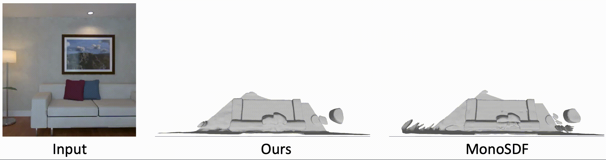 |
UNIKD: UNcertainty-Filtered Incremental Knowledge Distillation for Neural Implicit Representation
Mengqi Guo, Chen Li,Hanlin Chen, Gim Hee Lee. ECCV 2024 [Paper] [Project Page] |

|
TreeSBA: Tree-Transformer for Self-Supervised Sequential Brick Assembly
Mengqi Guo*, Chen Li*,Yuyang Zhao, Gim Hee Lee. ECCV 2024 [Paper] [Project Page] |
|
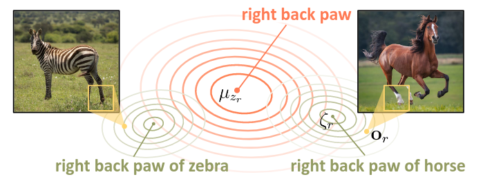 |
ESCAPE: Encoding Super-keypoints for Category-Agnostic Pose Estimation
Khoi Duc Nguyen, Chen Li, Gim Hee Lee. Computer Vision and Pattern Recognition (CVPR), 2024 [Paper] [Code] |
|
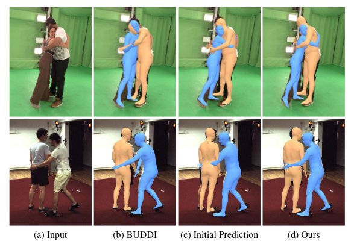 |
Closely Interactive Human Reconstruction with Proxemics and Physics-Guided Adaption
Buzhen Huang, Chen Li, Chongyang Xu, Liang Pan, Yangang Wang, Gim Hee Lee. Computer Vision and Pattern Recognition (CVPR), 2024 [Paper] [Code] |
|
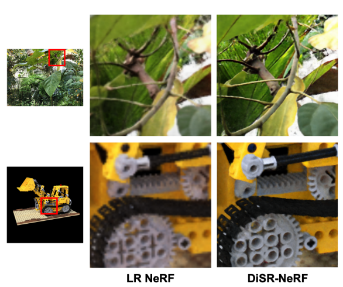 |
DiSR-NeRF: Diffusion-Guided View-Consistent Super-Resolution NeRF
Jie Long Lee, Chen Li, Gim Hee Lee. Computer Vision and Pattern Recognition (CVPR), 2024 [Paper] [Code] |
|
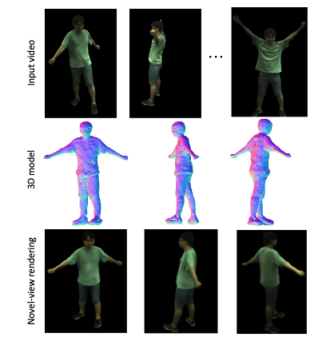 |
GHuNeRF: Generalizable Human NeRF from a Monocular Video
Chen Li, Jiahao Lin, Gim Hee Lee. International Conference on 3D Vision (3DV 2024) [Paper] [Code] |
|
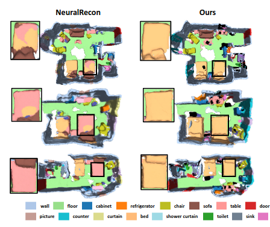 |
GNeSF: Generalizable Neural Semantic Fields
Hanlin Chen, Chen Li, Mengqi Guo, Zhiwen Yan, Gim Hee Lee. Conference on Neural Information Processing Systems (NeurIPS 2023) [Paper] [Code] |
|
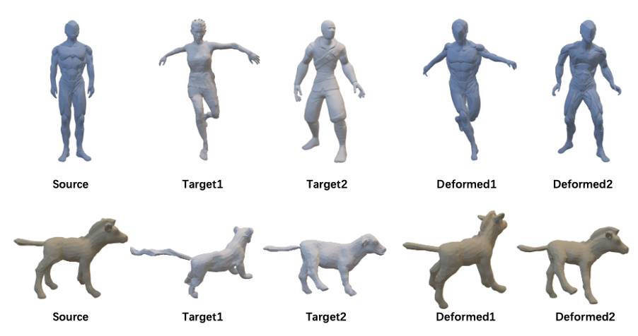 |
Weakly-supervised 3D Pose Transfer with Keypoints
Jinnan Chen, Chen Li, Gim Hee Lee. International Conference on Computer Vision (ICCV), 2023 [Paper] [Code] |
|
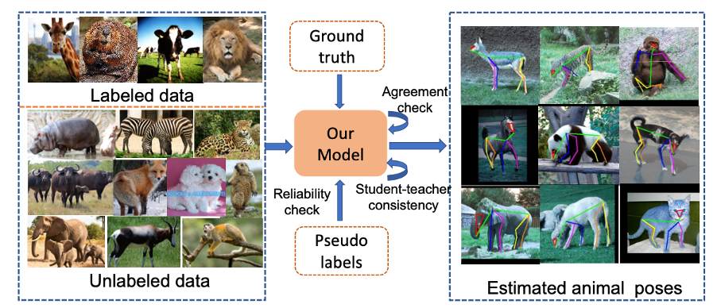 |
ScarceNet: Animal Pose Estimation with Scarce Annotations
Chen Li, Gim Hee Lee. Computer Vision and Pattern Recognition (CVPR), 2023 [Paper] [Code] |
|
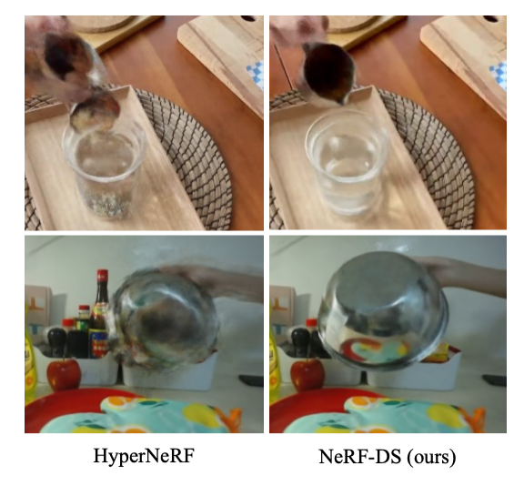 |
NeRF-DS: Neural Radiance Fields for Dynamic Specular Objects
Zhiwen Yan, Chen Li, Gim Hee Lee. Computer Vision and Pattern Recognition (CVPR), 2023 [Paper] [Code] [Project Page] |
|
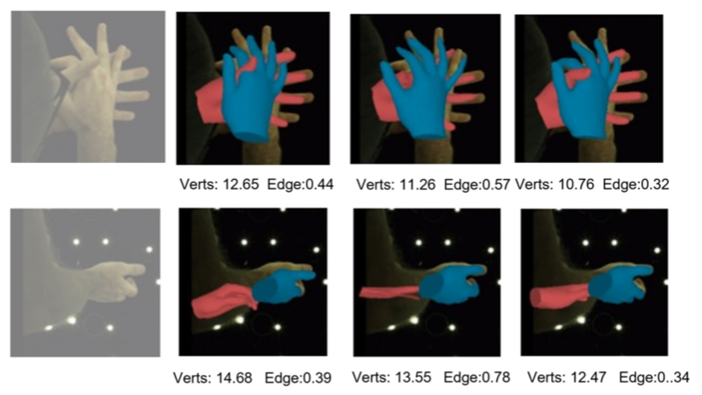 |
Overcoming the Tradeoff in Accuracy and Plausibility for 3D Hand Shape Reconstruction
Ziwei Yu, Chen Li, Linlin Yang, Xiaoxu Zheng, Micheal Bi Mi, Gim Hee Lee, Angela Yao. Computer Vision and Pattern Recognition (CVPR), 2023 [Paper] |
|
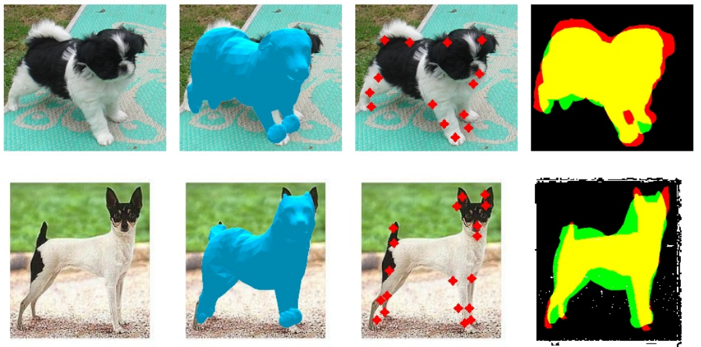 |
Coarse-to-fine Animal Pose and Shape Estimation
Chen Li, Gim Hee Lee. Neural Information Processing Systems (NeurIPS), 2021 [Paper] [Code] |
|
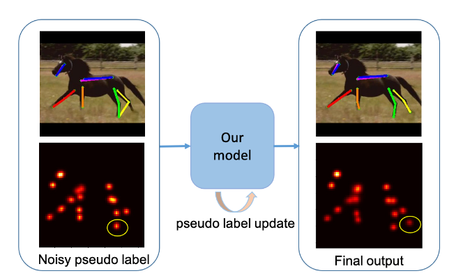 |
From Synthetic to Real: Unsupervised Domain Adaptation for Animal Pose Estimation
Chen Li, Gim Hee Lee. Computer Vision and Pattern Recognition (CVPR), 2021 (Oral) [Paper] [Code] [Video] [Project Page] |
|
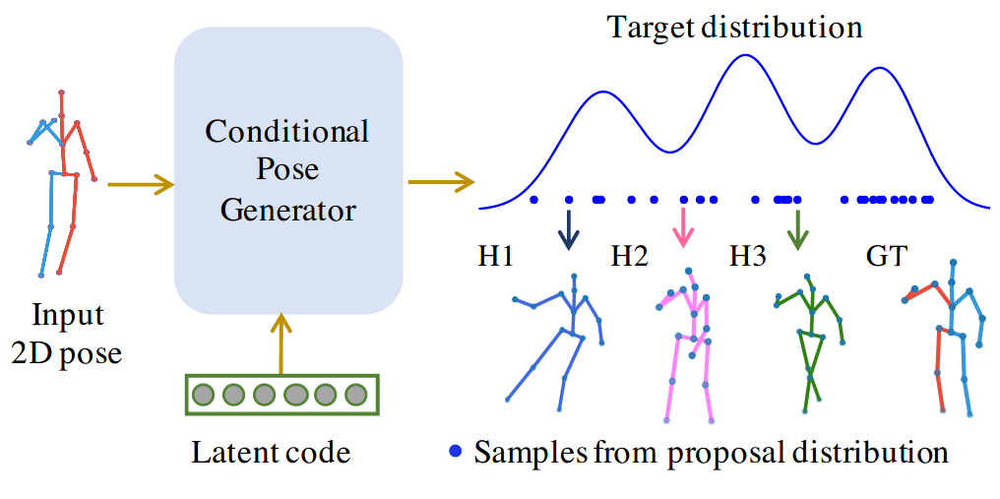 |
Weakly Supervised Generative Network for Multiple 3D Human Pose Hypotheses
Chen Li, Gim Hee Lee. The British Machine Vision Conference (BMVC), 2020 [Paper] [Code] |
|
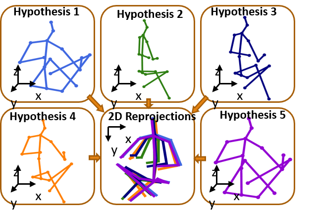 |
Generating Multiple Hypotheses for 3D Human Pose Estimation with Mixture Density Network
Chen Li, Gim Hee Lee. Computer Vision and Pattern Recognition (CVPR), 2019 [Paper] [Supplementary Material] [Code] |
|
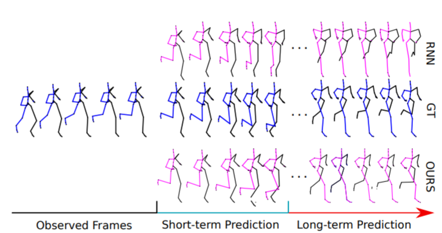 |
Convolutional Sequence to Sequence Model for Human Dynamics
Chen Li*, Zhen Zhang*, Wee Sun Lee, Gim Hee Lee. Computer Vision and Pattern Recognition (CVPR), 2018 [Paper] [Supplementary Material] [Code] |
Professional Services
Reviewer: CVPR, ICCV, ECCV, NeurIPs, ICLR, AAAI, 3DV, BMVC
Work Experience
- 2017.03-2017.12: Research Assistant at National University of Singapore
- 2022.01-2024.05: Research Fellow at National University of Singapore
- 2024.05-Current: Senior Scientist at A*STAR
Teaching Assistant
- 2020 Jan: CS5477 3D Computer Vision, NUS
- 2019 Fall: CS5340 Uncertainty Modeling in AI, NUS
- 2018 Fall: CS4243 Computer Vision and Pattern Recognition, NUS
- 2016 Fall: Circut Theory, Beihang University
Awards
- 2021:Chinese government award for outstanding self-financed students abroad
- 2021:ICCV 2021 Doctoral Consortium
- 2021:Research Achievement Award, NUS
- 2017: Outstanding Graduate Award, Beihang University
- 2014-2016: Academic Scholarship for three consecutive years, Beihang University
- 2011: National Scholarship of China